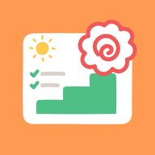
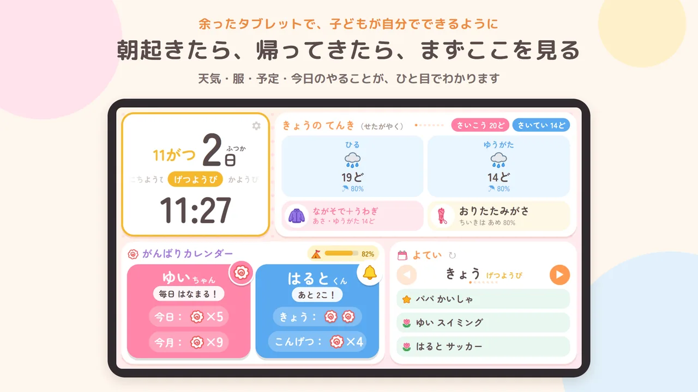
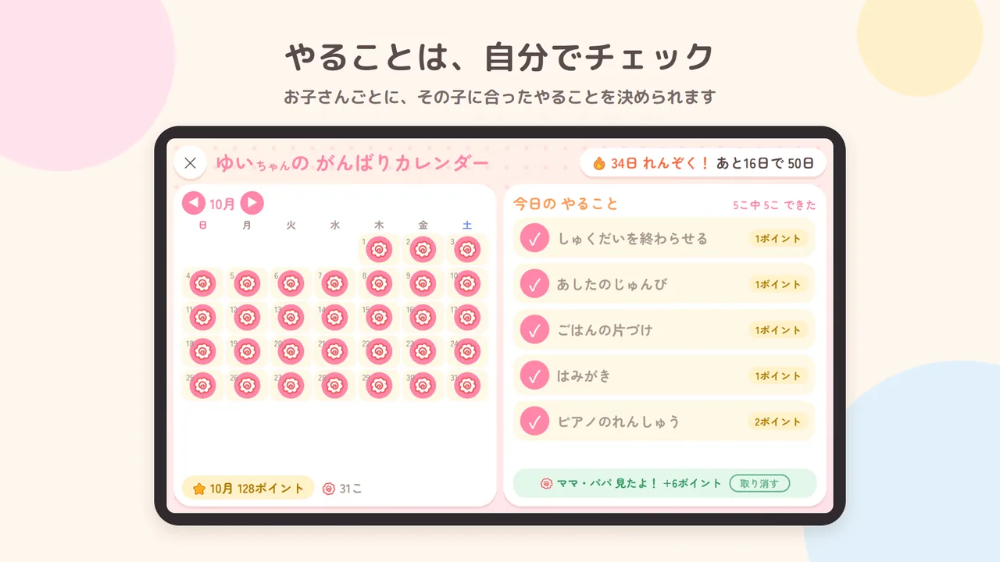
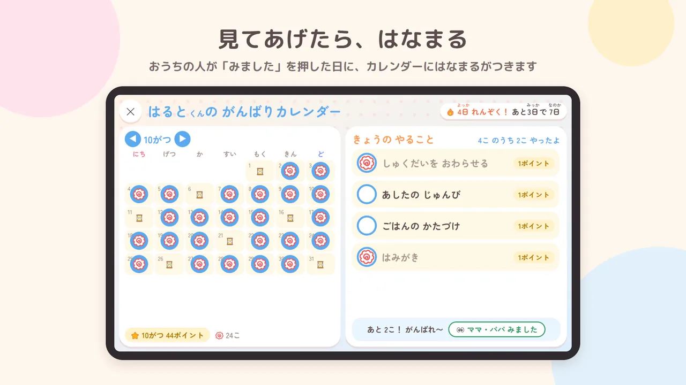
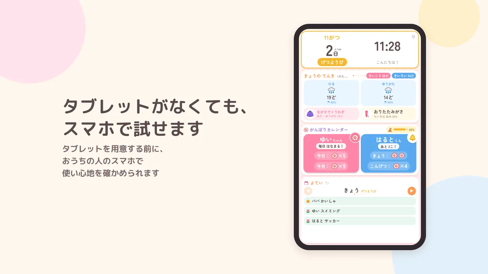

はなまるボード
今日がわかる。自分でできる。
余ったタブレットを、子どもが毎朝見るボードにするアプリです。時計・天気・予定と、子どもごとのやることを1つの画面に出します。子どもができたやることを自分で押して はなまるにし、おうちの人が「みました」を押すと、カレンダーにもはなまるがつきます。
テストにご協力ください
Google Play で公開する前に、実際のご家庭で使っていただくテストをしています。Android のスマホかタブレットがあれば参加できます（費用はかかりません）。
テストに参加する方法画面




できること
- 朝の準備: 天気から「はんそで」「かさ いるよ」などを出し、着る服や持ち物を子どもが自分で考えるきっかけにします。
- がんばりカレンダー: お子さんごとに決めたやることを、できたら子どもが自分で押して はなまるにします。できた日はカレンダーにたまっていきます。
- おうちの人のスマホから: 同じ Wi-Fi のスマホから、記録を見て「みました」を押せます。
- データは端末の中だけ: 記録や設定は外に送りません。広告もありません。
使える端末
記録はリビングなどに置いた端末の中にあります。おうちの人のスマホは、同じ Wi-Fi から置いた端末につないで、「みました」や設定をします。
| Android アプリ | ブラウザ版 （準備中） | iOS アプリ | |
|---|---|---|---|
| 置く端末（記録を持つ） | Android のタブレット・スマホ | iPad・iPhone・PC など（その端末のブラウザに記録） | 検討中 |
| 同じ Wi-Fi の別の端末から「みました」 | できる | できない（1台で使う） | |
| 決まった時間に画面をつける・ボードを前に出す | できる | できない（自分で開く） | |
| 毎日のお知らせ（通知） | 準備中 | できない | |
| 家の外から見る・応援する | 準備中 | 準備中 |
端末を替えるときは、設定の「データの書き出し・読み込み」で記録を移せます。